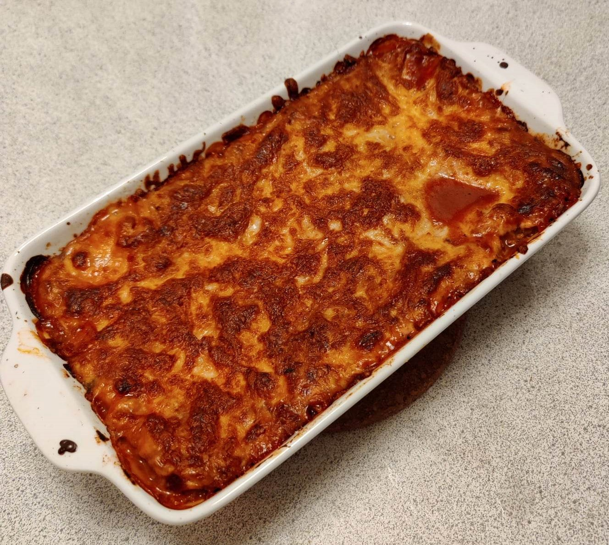

Lasagne

Lasagne er en sikker vej til at få sig en hyggelig og tilfredsstillende
lørdag.
Og alt efter hvor sulten man er, kan man nyde godt af sin indsats i et
par dage forud!
Lasagne er en af mine yndlingsretter at sætte mig for at lave på en
weekendsdag, hvor jeg ingen andre planer har.
At lade grøntsager, rødvin og oksekød skabe en symfoni af duft, som
spræder sig i lejligheden,
skaber altid en skøn spænding, men føles samtidigt som en brav kamp om
afholdenhed,
da jo længere man kan holde ud at lade den stå på komfuret, jo bedre
bliver det endelige resultat.
På samme måde kan selve måltiddet også føles som en afholdenhedskamp,
da lasagne har den fantastiske egenskab kun at blive bedre og bedre,
når den får lov til at ligge over natten og lade alle de forskellige
smage lære hinanden at kende.